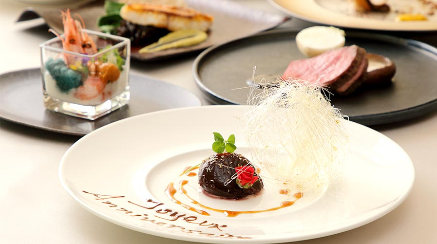

いつも以上に特別な日は、愛知県小牧市のフレンチレストラン「Chez Chouchou（シェ シュシュ）」で、
上質な料理とワインをお愉しみください。
天然記念物の見島牛をはじめとするブランド肉、
金沢をメインに全国各地から仕入れる鮮魚や地元野菜、油や塩といった良質な調味料など、
自分の目で見て、生産者さんとふれ合い選び抜いた厳選素材を使って、特別なコースをご用意いたします。
お客様のご要望に合わせてお作りいたしますので、ご予約の際にご予算や苦手なもの、希望する食材な
どを気兼ねなくお申し付けください。
特別な日だからこそ
身体が喜ぶものを

当店がお届けする料理は、化学調味料や添加物を一切使っておりません。
お肉・海鮮・野菜・調味料…。すべて天然ものや農薬不使用のものを中心とした、生産者さんの顔や想いの分かるものばかり。
お客様の口に入るものだからこそ、当たり前のこととして安全性の高い素材を追求しております。
フランスで学んだ技術や感性を駆使して、シェフのみならず造り手の想いも込めて作り上げる渾身の一皿をどうぞ。


 年間数頭しか出荷されない
年間数頭しか出荷されない
天然記念物の幻の牛
見島牛

山口県萩市の見島に生息する地域限定天然記念物の“見島牛
（ミシマウシ）”。
現地では天然記念物なので食べることはできませんが、年
間に数頭だけ、天然記念物を解かれて島外で食することが
できるようになります。幾度となく、生産者さんとやり
取りをする中でその希少な部位も仕入れることができるよ
うになりました。
噛むほどに旨味が広がる赤身と、さっぱりとしながらも甘
脂身。2つの絶妙なバランスにより、肉本来の味わいを
存分に愉しめます。
見島牛コースお一人様 18,000円
<コース内容＞< /p>
- オードブル2種
グラニテ
デザート - スープ
見島牛料理
コーヒーor紅茶 - 魚料理
パン
- ※前日までにご予約ください。
- ※2名様以上、偶数人数にてご予約を承っております。
- ※ランチタイムにもご利用いただけます。
- ※部位により金額が異なります。
 記念日コース
記念日コース
食材のグレードによってお値段が
変わります。
ボリューム感は変わりません

お一人様
8,800円/12,000円/15,000円～
<コース内容>
オードブル数種
スープ
魚料理
グラニテ
お肉料理
パン
デザート
コーヒーor紅茶
- ※前日までにご予約ください。
- ※2名様よりご予約を承っております。
- ※仕入れ状況により品数は変わる場合がございます。
- ※前日までにご予約いただければメニューカードをご用意いたします。
Wine
ワインも安心なものを
自然派ワイン
自然派ワインとは、化学肥料や農薬を使わずに栽培した葡萄で造られたワインのこと。
酸化防止剤を減らし野生酵母で発酵させるなど、自然にこだわる造り手の絶え間無い努力から生まれております。
食品衛生法上、亜硫酸使用量の最大限度は350ppmですが、当店で紹介しているワインは更に少なく、すべて10ppm以下のもの。どのワインにどの料理という決まりはありませんので、ぜひ様々なペアリングをお試しください。
グラスで変わる味わいもお愉しみください
ワイングラスの老舗
リーデル
同じワインでもグラスによって味わいや香りが
全く異なります。
より美味しいワインを愉しんでいただきたいという想いから、当店では265年以上の歴史を持
つ、オーストリア・リーデル社のグラスを使用。
ワイングラスの老舗であり、ブドウ品種ごとに
理想的な形を追求されています。
職人の技が活きた
うすはりRグラス
ビールは、電球用のガラス生産工場として創業した
松徳硝子株式会社製のうすはりRグラスで。
職人による手仕事にこだわり、大正11年から守り続
けてきた技術を元に上質なグラスを造られています。
ガラスの厚さは1mmを切る薄さ。
その形状の美しさを愛でながら味わうビールは格別
です。
ワイン以外にも、ビール・焼酎・日本酒・梅酒・カクテルなど様々なドリンクをご用意しております。
その日の気分やお好みに合わせてどうぞ。
- 営業時間
- ランチ 12:00～14:30（ラストオーダー 13:45）
ディナー【予約制】17:30～22:00（ラストオーダー 20:30）
※日曜日のディナータイムは17:00～21:30（ラストオーダー 20:00）
- 定休日
- 月曜日・その他 不定休あり